谷厳寺/長野県
♪キミは〜おぼえて〜いる〜かしら〜 あの〜金色の大観音（だいかんのん〜）♪
てなわけで随分前に紹介した千葉の高谷大観音。1999年のレポートですか。フィルムだねえ。
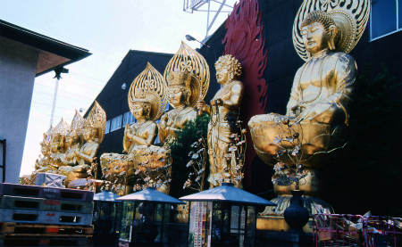
おお、憶えてるよ！と仰る方は本サイトとのお付き合いも既に10年以上経過しているヘビー☆チンデリスト（略してヘビチンね）とお見受けいたします。毎度！
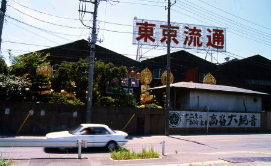
湾岸エリアの倉庫みたいなディスカウントストアの片隅にあった8体の大仏が消滅してしまったという噂を聞いたのは随分前だった。
ところが！！！！
その大仏軍団が長野の山奥でどっこい生きながらえているという話を聞きつけたのである！
最初に知ったのはローカル新聞の記事だった。千葉にあった大仏8体が訳あって長野にお引越ししてめでたく開眼、的な内容だったと記憶している。
場所は長野県中野市。
谷厳寺（こくごんじ）というお寺の裏山に件の大仏軍団はおわすという。
桜と紫陽花で有名なお寺らしい。なるほど庭は綺麗に整えられていて、出来て間もない感じの本堂も凛とした佇まいを見せている。
何となくファンキーな雰囲気を勝手に想像していたので凄く真っ当、どころかかなりちゃんとしたお寺だったので逆にビックリした。
さらに数年前の新聞によるとこのお寺の地下に地元ゆかりの画家が描いた地獄絵があるとかなんとか…。
これも凄く気になるぞ。早速お寺にご挨拶に伺うと、地獄絵の方は現在は公開していないとか。
まあ、それはイイや。こっち大仏さん目当てでやってきたのだから。多くは求めませんとも。
てなわけでお寺の裏山に足を踏み入れる。
お寺の裏山といえば草ボーボーのイメージがあるが、ここは人の手が入った、いわゆる里山、しかも相当綺麗に整備された里山であることはすぐに分かった。
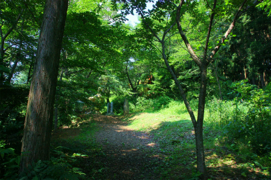
枝おろしをしてあるから木が生い茂っていても地表まで陽が届いている。
やや標高が高いのもあるのだろうがギャングスターばりに荒っぽい繁殖力を誇る外来種の草がない。
そして歩道の部分には木のチップが敷き詰められている。
つまり大仏さんを迎え入れるにあたって整備したのだろう。
お寺サイドの意気込みが感じられようというものだ。
そんな山道を歩いていくと見えてきました大仏軍団の先鋒、阿弥陀如来サマ。
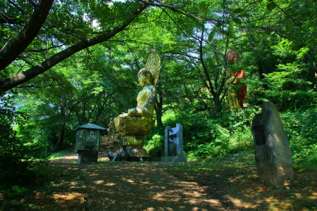
ちなみにこれら8体の仏像は十二支の守り本尊である。
それぞれの干支を守っているのだが、4つの仏サマは二支を兼任しているので、全部で8体、という勘定になる。
自分の干支を担当する守り本尊を探してそこに参拝するというシステムなのだ。
というわけでこの阿弥陀サマは戌、亥年生まれの守り本尊。芸能人で言うと森山周一郎とか愛川欣也とか。イケメン揃いですね…。
千葉で会ってから12年ぶりの再会。丁度干支が一回りした勘定になる。お久しぶりです。俺はこんなに老けました…。
一方、観音サマの方は煤けた湾岸エリアから空気の綺麗な長野に引越しされて幾分つややかさが増したような…。
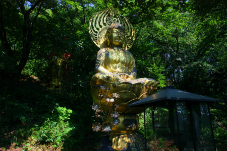
傍らには寄進者である千葉のディスカウントショップ＆家具屋のオーナーの顕彰碑が立っていた。
顕彰碑の日付は平成15（2003）年11月。
見上げれば森の中に大日如来。未、申年（勝新太郎、高倉健）担当。
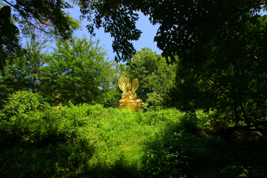
倉庫居抜きっぽいディスカウントショップ（＆家具屋）の建物の隅に並べられていた頃と比べて広々とした環境で余生を送っておられるようだ。
千葉時代は建物の脇にズラリと並んでいたのでえも言えぬ迫力があったが、ここでは一体一体離れて配置されているのと広々とした場所なので大きさはあまり感じない。
それでも8m位はあるのだよ。
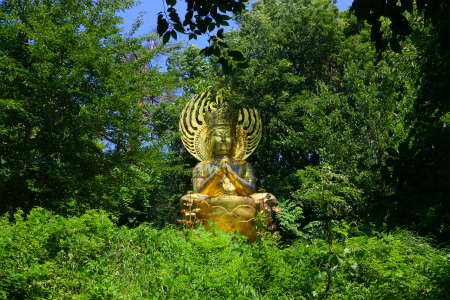
阿弥陀如来の後ろに立つ不動明王。酉年（ジェームス・ブラウン、セルジオ越後）担当。
金ぴかオンリーの大仏軍団において異彩を放っている。そのファイヤーパターンは緑の中において冴え渡りまくり。
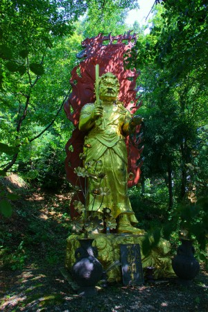
近くで見ると若干ウエザリング入ってるが、まあ多くの悪党を成敗してきた剣ゆえ多少は刃こぼれもするだろうよ。
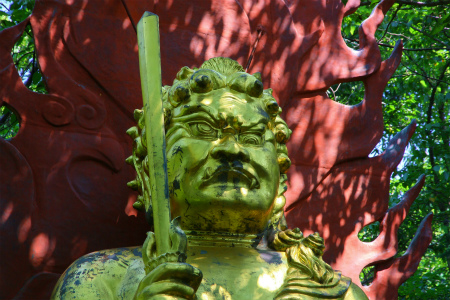
阿弥陀サマとの位置関係はこんな。
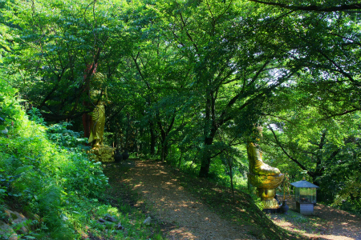
大仏同士は十数メートルほどの間隔が保たれている。
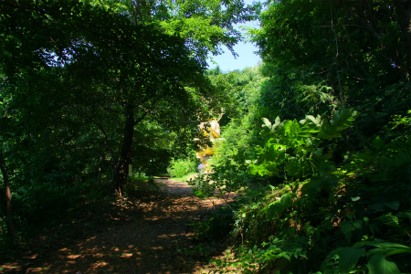
一体見つけて近づくと、先にまたもう一体木々の間に見え隠れしている、そんな按配。
勢至菩薩。午年（六平直政、竹村健一）担当。
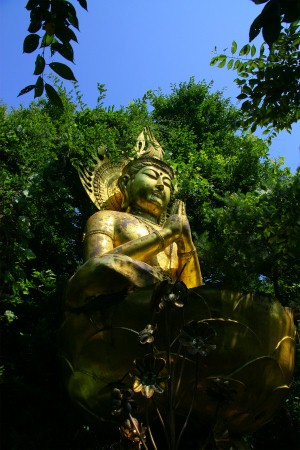 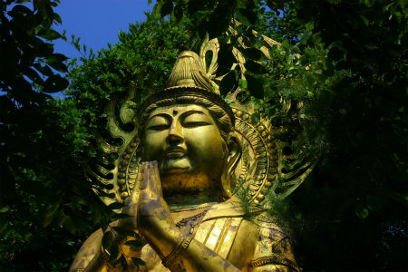
まるで森の妖精のように木々の間からふわっと現れる。余りある敷地をふんだんに使った絶妙な配置なのだ。
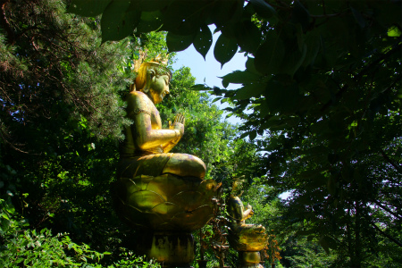
先ほどの大日如来。近づくとやはり大きい。
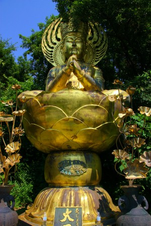
普賢菩薩。辰、巳年（王貞治、ブルース・リー）担当。
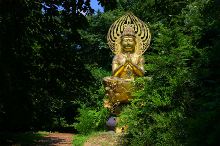
巨体の割には台座の象さんがこじんまりしているような気が…。
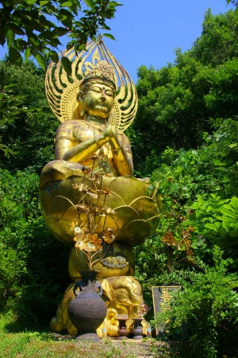 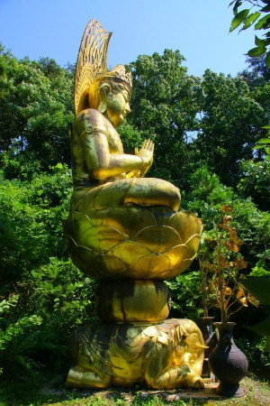
象さんの顔。若冲の絵みたい。
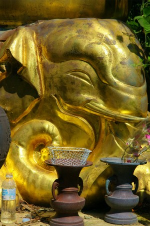
おお、凄い顔の獅子が見えてきた、ということは…
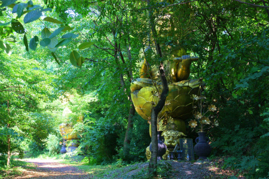
文殊菩薩。卯年（山本晋也、山本リンダ)担当。
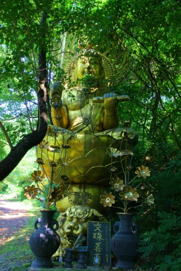 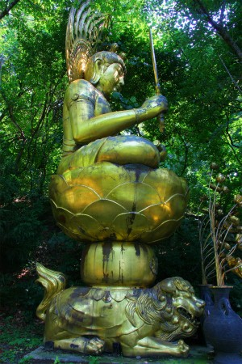
獅子の上に乗り、両手に剣と巻物を持っている。
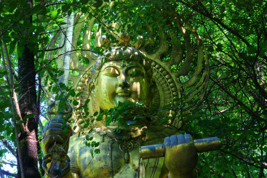
ロデオだったら両手ふさがってて超危険ですね。
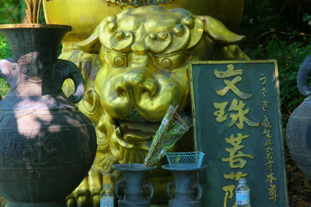
さらに山道を進むと現れるのが虚空蔵菩薩。丑、寅年（ジャイアント馬場、デーモン小暮閣下）担当
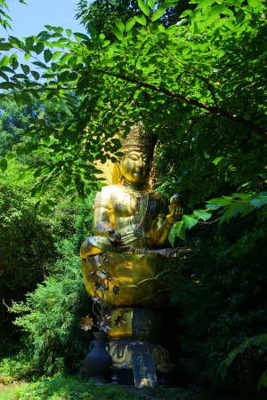 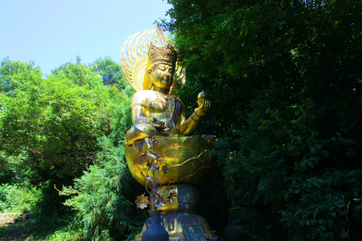
これらの大仏軍団の特徴は精緻な装飾にあると見た。
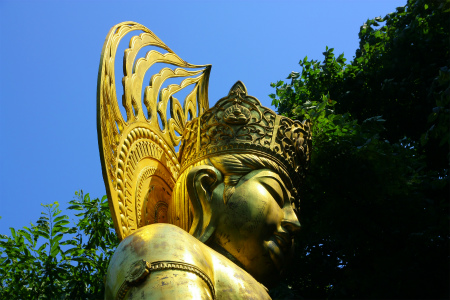
冠の飾りや光背の造型などにそのこだわりが見て取れる。
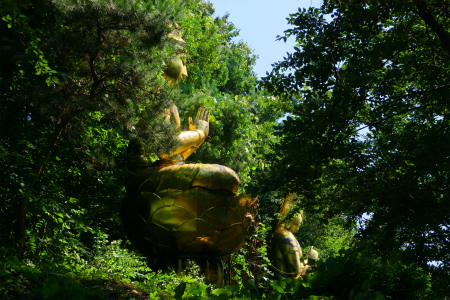
そして大トリは千手観音。子年（立川談志、チャック・ブラウン担当）
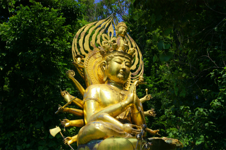
…ちなみに干支ごとの生まれた人のチョイスは単に私の趣味なのですが、結果、そっちの方が神様みたいなラインナップになっちゃって、守り本尊様がかすんでしまったことを深謝する次第であります…。
都会でのハードな生活を終え、空気の綺麗なところで余生を過ごしている、そんな感じが滲み出ていた。
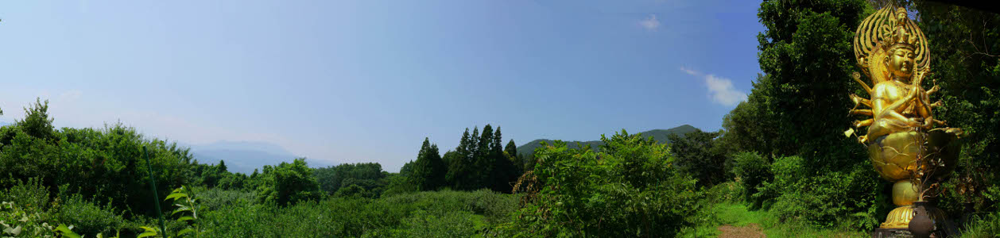
珍寺の仏像の末路って大抵悲惨なケースが多いが、良い所に再就職できて良かったですね。
でもね。
千葉にいた頃の鉄火場のような時代を知る者としてはそれはそれで悪くなかったんだよなあ。
2011.07.
珍寺大道場 HOME